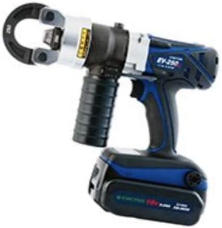
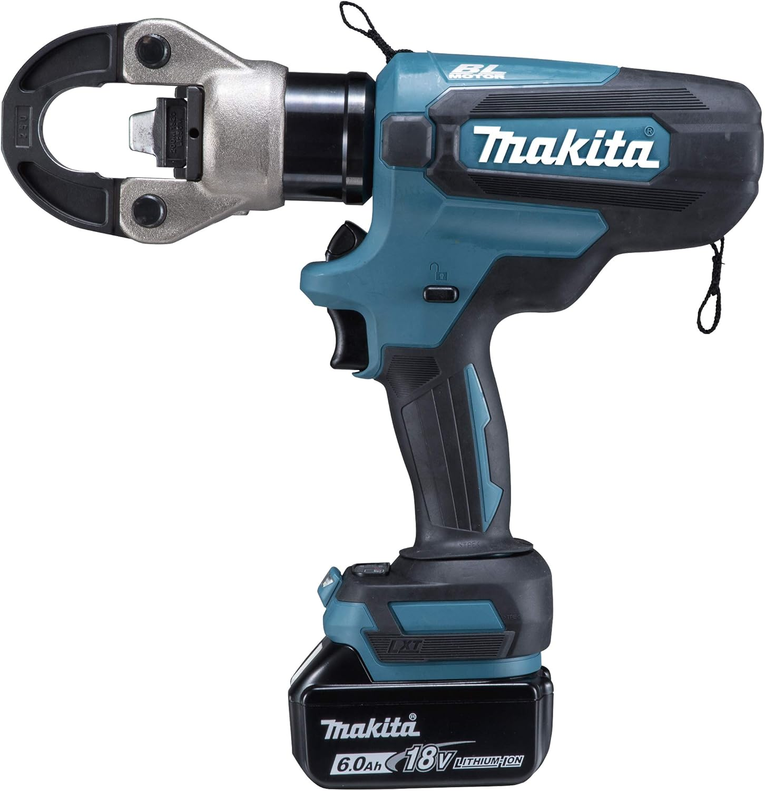

電動圧着機と手動油圧圧着機の違い｜現場での使い分けとおすすめ機種
圧着機はどれでも同じというより、電動か手動油圧かで使い勝手がかなり変わります。
圧着するサイズや本数、現場での出番によって向いている物が変わるので、
何となく選ぶと重すぎたり、逆に作業がしんどかったりします。
このページでは、電動圧着機と手動油圧圧着機の違いを、実際の現場で考えやすい形でまとめます。 おすすめ機種も入れながら、どっちを選ぶべきか分かるようにしています。
先に結論
・幹線や本数が多くてスピード重視なら電動圧着機
・たまに使う、まず導入したい、価格を抑えたいなら手動油圧圧着機
・現場でしっかり使うなら、電動の楽さはかなり大きい
・ただし使用頻度が低いなら、手動油圧でも十分な場面はある
電動圧着機と手動油圧圧着機の比較表
| 比較項目 | 電動圧着機 | 手動油圧圧着機 |
|---|---|---|
| 種類 | バッテリー駆動の電動式 | 手動ポンピングの油圧式 |
| 作業スピード | 速い | やや遅い |
| 力の必要性 | ほぼ力いらない | 手動操作あり |
| 価格感 | 高い | 比較的抑えやすい |
| 向いている用途 | 幹線・本数が多い現場 | たまに使う・導入用 |
| 向いている人 | 効率重視の人 | コスパ重視の人 |
電動圧着機おすすめ3機種
本数が多い現場ほど、電動にしておいて良かったと感じやすいです。特に1位のパナソニックは、主力機として長く使う前提で見やすい1台です。
パナソニック(Panasonic) 充電圧着器 EZ46A4K-B

14.4V/18V対応のデュアルで、CV線250mm2圧着に対応した現場向けモデルです。 別売アタッチメントを使えばケーブル切断・圧縮・打ち抜きにも対応できるので、 現場で幅広く使いたい人にはかなり相性が良いです。
価格は高いですが、その分しっかりした主力機として見やすく、 「圧着機を1台ちゃんと持つ」なら最初に候補に入れておきたい機種です。
- 幹線や太物を触ることが多い人向け
- 圧着機をしっかり使う現場の人向け
- 1台で長く使いたい人向け
カクタス（CACTUS）EV-250DL 18V電動油圧式 圧着工具 クリンプボーイ

電動油圧式でパワー感があり、圧着作業を安定して進めたい人に向いています。 電動タイプらしい効率の良さがあるので、幹線や本数が多い現場で候補にしやすい機種です。
- 作業量が多い人向け
- 電動圧着機でしっかり使いたい人向け
- 力作業を減らしたい人向け
マキタ(Makita) 充電式圧着機 TC300DRG

マキタの充電工具を使っている人には特に見やすい機種です。 バッテリー運用の相性を考えやすく、電動圧着機として現場効率を上げやすいのがポイントです。
- マキタユーザー向け
- バッテリー共通で考えたい人向け
- 圧着を電動化したい人向け
手動油圧圧着機おすすめ2機種
使用頻度が高くないなら、手動油圧でも十分なケースは多いです。まず導入したい人はここから選ぶと失敗しにくいです。
ロブテックス 手動油圧式圧着工具 AKH150S

使用範囲14〜150で、オンダイス付き。手動油圧式として信頼感があり、 まずしっかりした手動油圧を持ちたい人に向いています。 電動ほどの速さはありませんが、導入しやすく実用性の高い1台です。
- 手動油圧でしっかりした物が欲しい人向け
- 使用頻度はそこまで高くない人向け
- コストと実用性のバランスを見たい人向け
油圧シリンダー 油圧圧着工具 YQK-70

コスパ重視で見やすく、軽作業や導入用として選びやすい機種です。 頻繁に使う現場の主力というより、まず持っておきたい人向けの立ち位置です。 価格を抑えて手動油圧を導入したいなら候補にしやすいです。
- 価格重視の人向け
- まず手動油圧を試したい人向け
- 出番がそこまで多くない人向け
どっちを選ぶべきか
迷ったときは、スペックよりも「現場での出番」で選ぶのがいちばん分かりやすいです。 幹線や太物、本数が多いなら電動の方がかなり楽で、毎回の作業負担を減らしやすいです。
逆に、たまにしか使わないなら手動油圧でも十分なことがあります。 初期費用を抑えたい場合は、まず手動油圧から導入して、出番が増えたら電動を追加する流れも現実的です。
日々の作業時間や疲れ方に直結する工具なので、 「自分の仕事内容に合ったものがあれば参考にしてください」。
FAQ
Q. 初心者はどっちを選べばいいですか？
A. まず使用頻度で考えるのが分かりやすいです。たまに使うなら手動油圧、頻繁に使うなら電動の方が作業しやすいです。
Q. 何sqくらいから電動が欲しくなりますか？
A. 一概には言えませんが、太物や本数が多いと電動の楽さを感じやすいです。幹線作業が続く現場ほど差が出やすいです。
Q. 手動油圧でも十分ですか？
A. 使用頻度が低いなら十分な場面はあります。毎日のように使うなら電動の方が負担は少ないです。
Q. バッテリー工具と揃えた方がいいですか？
A. 普段から同じメーカーの充電工具を使っているなら、運用のしやすさで選びやすくなります。
次に合わせて見たい工具


まとめ
電動と手動油圧は、どっちが上というより現場での出番で考えると選びやすいです。
本数が多い・幹線が多いなら電動、たまに使う・導入費を抑えたいなら手動油圧。
自分の仕事内容に合ったものがあれば参考にしてください。
※当サイトはAmazonアソシエイト・プログラムに参加しており、適格販売により収入を得ています。